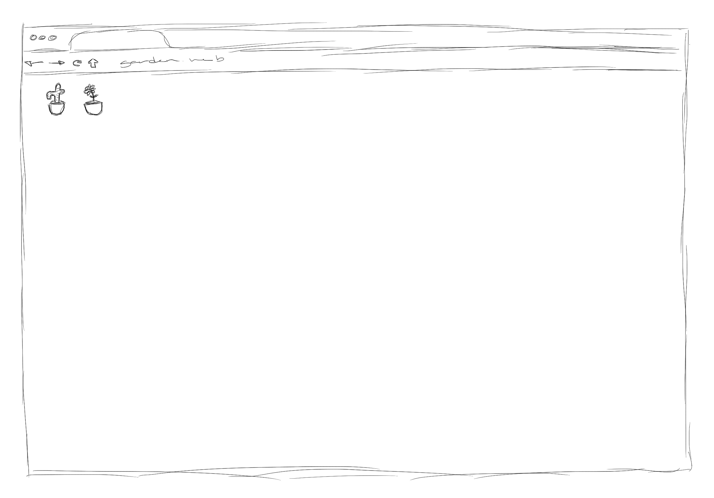

Reading Responses
Respond to the reading with a rough written/sketched website concept (or, if you want, a coded sketch of the website) that reacts to the concepts and topics of the reading. Then, upload this response to your class site. Use this as an opportunity to catalogue some ideas for future web projects (either in this class or beyond!).
For each week that we have a reading for, only choose 1 to respond to. For example: if there are 3 assigned readings in a week, only respond to one of those.
Here's an example by Shayla Pham:
"website as garden"
concept: a website that grows only as its audience does; when the website is opened, a single plant gets added to the page, and that's it. nothing more, nothing less.